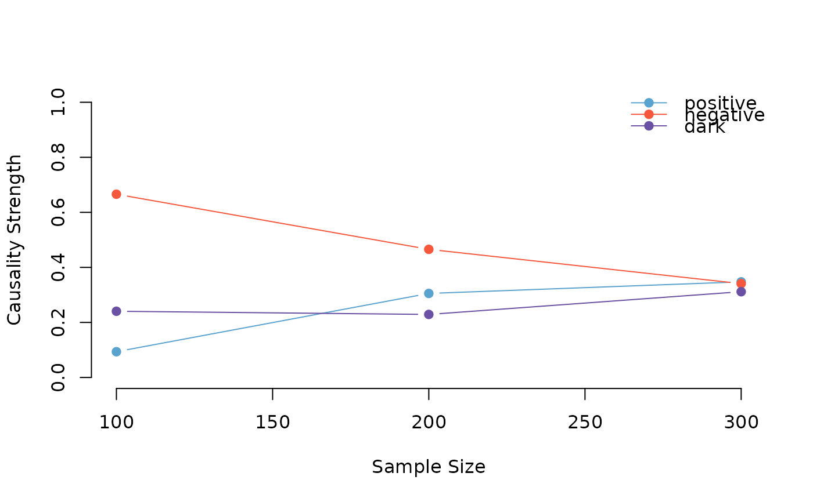

Evaluates the robustness of pattern causality measures through repeated sampling analysis. This function performs cross-validation by analyzing multiple subsets of the data to assess the stability of causality relationships.
Usage
pcCrossValidation(
X,
Y,
E,
tau,
metric = "euclidean",
h,
weighted,
distance_fn = NULL,
state_space_fn = NULL,
numberset,
random = TRUE,
verbose = FALSE
)Arguments
- X
Numeric vector; first time series
- Y
Numeric vector; second time series
- E
Integer; embedding dimension for state space reconstruction (E > 1)
- tau
Integer; time delay for state space reconstruction (tau > 0)
- metric
Character; distance metric, one of "euclidean", "manhattan", "maximum"
- h
Integer; prediction horizon (h > 0)
- weighted
Logical; whether to use weighted causality calculation
- distance_fn
Optional custom distance function for computing distances
- state_space_fn
Optional custom function for state space reconstruction
- numberset
Numeric vector; sample sizes for cross-validation
- random
Logical; if TRUE, randomly sample data points; if FALSE, take sequential samples from start (default: TRUE)
- verbose
Logical; whether to display progress information (default: FALSE)
Value
An object of class "pc_cv" containing:
samples: Vector of sample sizes used
results: Matrix of causality measures for each sample
summary: Summary statistics across all samples
parameters: List of input parameters
Details
Perform Pattern Causality Cross-Validation Analysis
The function implements these key steps:
Validates input parameters and data
Performs stratified sampling of time series data
Computes pattern causality measures for each sample
Aggregates results across all samples
Related Packages
nonlinearTseries: Provides nonlinear time series analysis tools
tseriesChaos: Offers chaos theory analysis methods
rEDM: Implements empirical dynamic modeling techniques
See also
pcLightweight for basic causality analysis
pcFullDetails for detailed analysis
Examples
# \donttest{
data(climate_indices)
X <- climate_indices$AO
Y <- climate_indices$AAO
numberset <- c(100, 200, 300)
result <- pcCrossValidation(X, Y, E = 3, tau = 1,
metric = "euclidean", h = 2,
weighted = TRUE, numberset = numberset)
print(result)
#> Pattern Causality Cross-Validation Results
#> ----------------------------------------
#> Parameters:
#> Embedding dimension (E): 3
#> Time delay (tau): 1
#> Metric: euclidean
#> Horizon (h): 2
#> Weighted: TRUE
#>
#> Sample sizes: 100, 200, 300
#>
#> Summary Statistics:
#> total positive negative dark
#> mean 0.2585 0.2488 0.4908 0.2604
#> sd 0.0490 0.1361 0.1639 0.0447
#> min 0.2167 0.0936 0.3409 0.2291
#> max 0.3125 0.3475 0.6659 0.3116
#>
plot(result)

# }